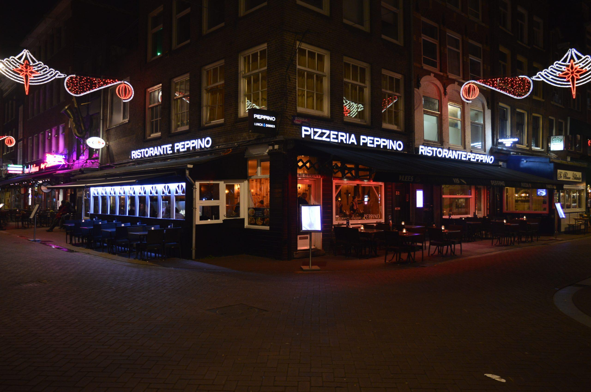
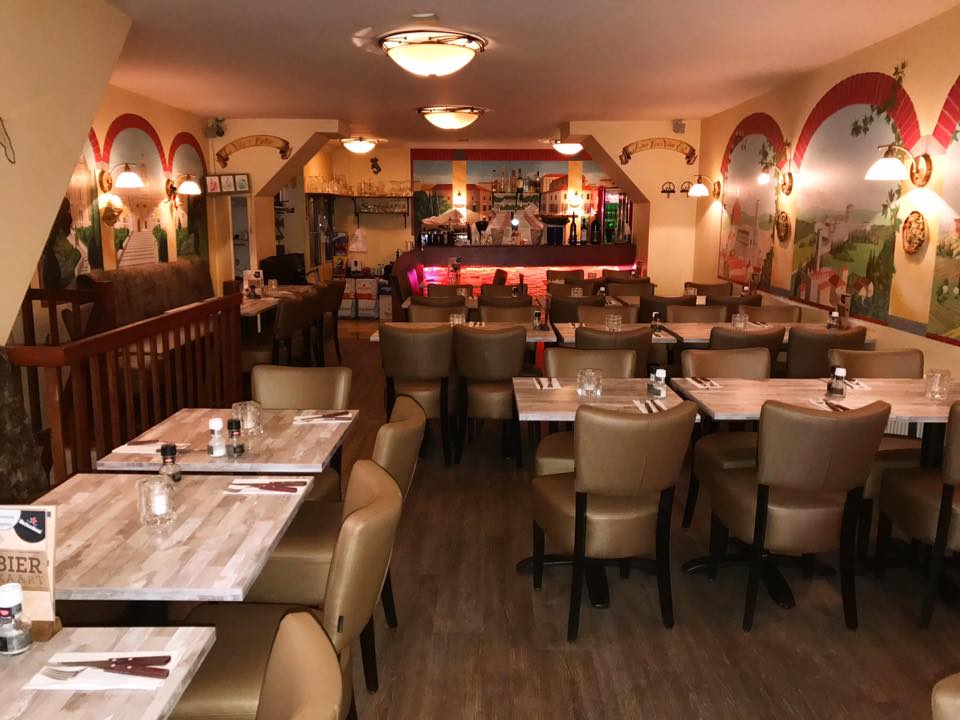
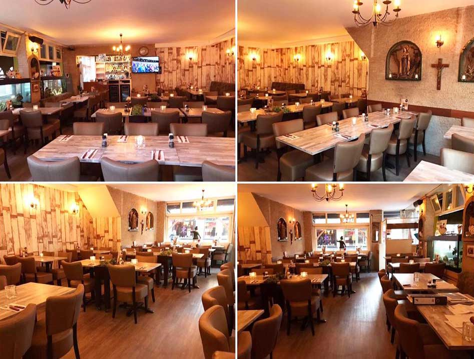
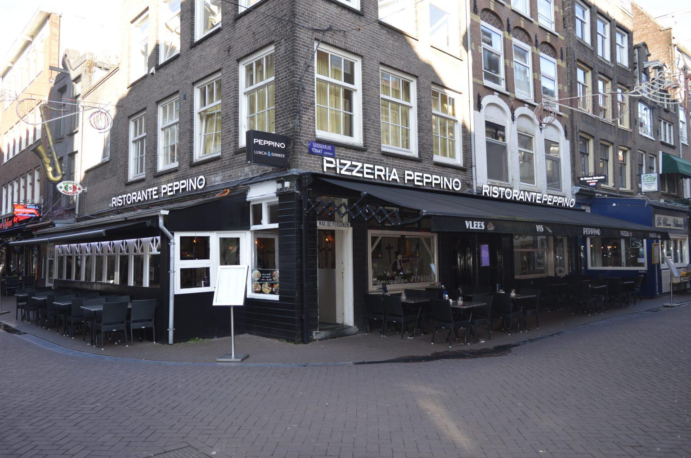

Italiaanse wijnen
Van Umbrië tot Toscane en van Piëmont tot Veneto: er zijn maar weinig wijnlanden zo divers als Italië, met druivensoorten die je alleen daar vindt.

Ristorante · Pizzeria · sinds 1984
Knapperige pizza, smakelijke pasta en wijn van Italiaanse bodem. Aan de Leidsekruisstraat, vlak bij het Leidseplein. Dagelijks open vanaf 12:00 uur.
Zin om weer even dat typisch Italiaanse vakantiegevoel te beleven? De smakelijke pasta, de knapperige pizza en de heerlijke Italiaanse drankjes. Peppino bestaat sinds 1984 en wordt gerund door ervaren en gedreven mensen, die hun passie voor de Italiaanse keuken graag met u delen.
Dagelijks staat onze deur vanaf 12:00 uur voor u open. U bent van harte welkom om binnen te lopen voor een hapje en een drankje.
Alle gerechten worden vers bereid met natuurlijke en pure ingrediënten.
Wat zou de Italiaanse keuken zijn zonder de kruiden van het Middellandse Zeegebied?
Wij schenken wijn van Italiaanse bodem. Buon cibo e buon vino.
Voor Italianen is koffie drinken geen bijzaak: het is een manier van leven.

Versgebakken brood, geserveerd met romige kruidenboter
Huisgemaakt brood uit de oven met verse knoflookolie, rozemarijn, zeezout en een aioli-dip
Huisgemaakte soep met verse groente
Huisgemaakte Italiaanse romige tomatensoep met verse basilicum
Geroosterd brood in knoflookolie met vers gekruide tomaten
Geroosterd brood in knoflookolie met vers gekruide tomaten en buffelmozzarella
Buffelmozzarella met verse tomaten en basilicum
Met cherrytomaten, huisgemaakte pesto, pijnboompitten en verse basilicum
Dun gesneden ossenhaas met rucola, pijnboompitten en truffelmayonaise
Parmaham met burrata
Mix van verschillende soorten Italiaanse kazen en vleeswaren
Gebakken champignons in knoflookboter
Gevulde champignons met gorgonzola uit de oven
Risottoballetjes met mozzarella en aioli-saus
Diepgefrituurde gepaneerde inktvisringen
Gebakken garnalen in knoflookolie en Spaanse pepers
Taartje van aubergine en mozzarella met tomatensaus uit de oven
Gemengde sla met tomaat, olijven, komkommer en uien
Gemengde sla met tomaat, olijven, uien en buffelmozzarella
Gemengde sla met tomaat, olijven, uien en tonijn
Gemengde sla met gerookte zalm en uien
Gemengde sla met avocado en cherrytomaten
Romeinse sla met kip, knapperige croutons, Parmezaanse kaas en caesardressing
Tomatensaus, mozzarella, oregano en verse basilicum
Tomatensaus, mozzarella en champignons
Tomatensaus, mozzarella en ham
Tomatensaus, mozzarella en salami
Tomatensaus, mozzarella, champignons en ham
Tomatensaus, mozzarella, tonijn en uien
Tomatensaus, mozzarella en pikante salami
Tomatensaus, mozzarella, ham en ananas
Tomatensaus, mozzarella en Parmaham
Tomatensaus, mozzarella, aubergine, courgette, champignons en paprika
Tomatensaus, mozzarella, ham, salami, champignons en artisjok
Tomatensaus, mozzarella, ansjovis, uien, olijven en kappertjes
Tomatensaus, mozzarella, burrata en verse basilicum
Tomatensaus, mozzarella, gerookte zalm en rucola
Tomatensaus en vier soorten kaas
Tomatensaus, mozzarella, kipfilet, uien, paprika en champignons
Gevulde pizza met tomatensaus, mozzarella, ham, salami, champignons, paprika en gehaktsaus
Klassieke Napolitaanse pasta met knoflook, olijfolie en peterselie
Traditionele pasta met huisgemaakte tomatensaus
Pasta met rundergehakt in huisgemaakte tomatensaus
Romige pasta met spek, eigeel en mozzarella in roomsaus
Pittige pasta met tomatensaus, knoflook en chilipeper
Romige penne met kip en huisgemaakte pesto in roomsaus
Romige penne met vier soorten kaas
Verse pasta met gemengde zeevruchten in een lichte tomatensaus met witte wijn
Verse pasta met zalm en spinazie in roomsaus
Verse pasta met garnalen in een lichte tomatenroomsaus
Klassieke Italiaanse pasta met venusschelpen, verse knoflook en cherrytomaten in olijfolie en witte wijn
Gevulde pasta met ricotta en spinazie in romige tomatensaus
Gevulde pasta met ham in een romige roomsaus
Gevulde pasta met mozzarella en verse basilicum in tomatensaus
Gevulde pasta met paddenstoelen en knoflook in een romige roomsaus
Gevulde pasta met een mix van vier soorten kaas in een romige roomsaus
Gevulde pasta met zalm en courgette in een romige roomsaus
Gevulde deegrollen met ricotta en spinazie, ovengebakken in tomatensaus
Traditionele ovengebakken laagjes deeg met gehakt, tomatensaus en mozzarella
Ovengebakken lasagna met gehakt en romige gorgonzola
Ovengebakken lasagna met gehakt, aubergine, mozzarella en tomatensaus
Klassieke Italiaanse risotto met verse champignons in witte wijnsaus
Klassieke Italiaanse risotto met verse zeevruchten in witte wijnsaus met een scheutje tomatensaus
Angusburger met tomaat, augurk, ui en cheddar, geserveerd met friet
Malse gegrilde kipfilet, geserveerd met friet en salade
Sappige gegrilde entrecote met groene pepersaus, geserveerd met friet en salade
Klassieke Italiaanse kalfsschnitzel, geserveerd met friet en salade
Getrancheerde entrecote met zongedroogde tomaten, Parmezaanse kaas, rucola en balsamicodressing, geserveerd met friet
Malse ossenhaas met romige gorgonzolasaus, geserveerd met friet en salade
Zalm van de grill, geserveerd met friet en salade
Gebakken zeebaarsfilet, geserveerd met friet en salade
Van een glas Italiaanse wijn bij de pasta tot een cocktail op het terras.
Van Umbrië tot Toscane en van Piëmont tot Veneto: er zijn maar weinig wijnlanden zo divers als Italië, met druivensoorten die je alleen daar vindt.
Van zoet tot uitgesproken bitter, licht, donker, fruitig en moutig. We schenken bieren van kleine brouwerijen en bekendere namen; onze bierkaart is met zorg samengesteld.
Liefhebber van single malt, of wil je er meer over weten? Naast bekende distilleerderijen hebben we varianten van onafhankelijke bottelaars. We adviseren je graag.
Klassieke cocktails, altijd à la minute gemaakt met verse ingrediënten. Staat je favoriet er niet tussen? Vraag het gerust: als de ingrediënten er zijn, maken we hem graag.
Gemixt met een goede, bijpassende tonic is gin een perfect aperitief bij het diner, of om van te genieten in de zon op het terras.
De basis van klassiekers als de mojito en de Cuba libre. Hou je van zuur of zoet? We maken de cocktail naar jouw wens.
Ons restaurant bestaat uit twee delen, elk met hun eigen charme.

Neem plaats in de serre of in de grote zaal, aan een tafel voor vier. Bij lekker weer kunt u ook buiten zitten op ons terras. Kom dan wel op tijd: voor het terras kunt u niet altijd reserveren.

Om de hoek ligt de Peppino Lounge: relaxen op een van de loungebanken of de avond doorbrengen aan tafels voor twee of vier. De lounge is exclusief af te huren voor (besloten) groepen tot 60 personen en is volledig af te sluiten, dus u heeft uw privacy. Aan de zaal grenst een terras met heaters.
Geschikt voor vergaderingen, trainingen, recepties, borrels of gewoon een besloten lunch of diner, in de zomer en in de winter.
Vraag de lounge aanWeer heerlijk dunne pizza en zalige pasta voor mijn vrouw. Aardig personeel en zeer schappelijke prijzen. Kom gauw terug.
De Napolitanen die eigenaar zijn kunnen wel lekker pizza's bakken. Goede cappu toe als besluit.
In het weekend is reserveren aan te raden. Dat kan al vanaf 2 personen: wij zorgen dan voor een mooi plekje. Bel ons of stuur een mail.
020 627 11 75contact@peppinoamsterdam.nl
Komt u met een grotere groep en wilt u de besloten ruimte gebruiken voor een diner, lunch, meeting of andere gelegenheid? Laat het ons weten via het formulier.
020 627 11 75
contact@peppinoamsterdam.nl
Dagelijks open vanaf 12:00 uur
Italian restaurant and pizzeria since 1984, at Leidsekruisstraat 32, just off the Leidseplein. Open daily from 12:00. Booking is recommended at weekends, from 2 people: call +31 20 627 11 75 or email contact@peppinoamsterdam.nl. Our menu is also available in English: menu (pdf).